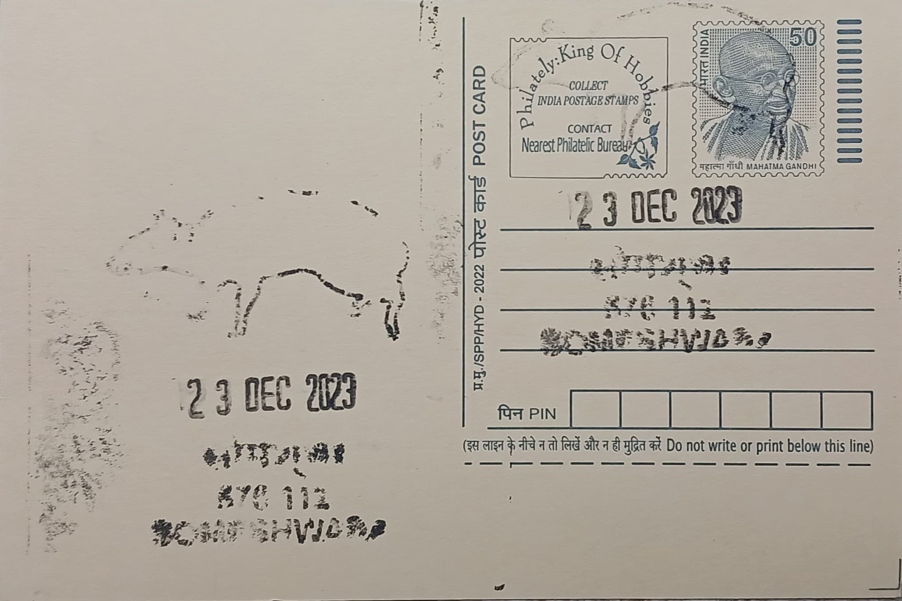

Indian Spotted Chevrotain (Mouse Deer)
ಭಾರತೀಯ ಚುಕ್ಕೆ ಚೆವ್ರೊಟೈನ್ (ಇಲಿ ಜಿಂಕೆ)


The Indian spotted chevrotain (Moschiola indica) is known locally and in common usage simply as the mouse deer, a name drawn from its diminutive, rodent-like proportions combined with the hooved, ruminant build of a true deer, even though it belongs to a distinct and far older evolutionary lineage. Taxonomically it was formally separated from the Sri Lankan species Moschiola meminna only in 2005, when researchers Colin Groves and Erik Meijaard re-examined skins and skulls of chevrotains across India and Sri Lanka and determined that the mainland Indian population warranted recognition as its own species. Before that revision, animals now called Moschiola indica were classified together with their Sri Lankan relatives under a single name, and the split reflects differences in coat pattern, skull structure, and spotting that distinguish the populations found across southern India, including those recorded in the forest tracts of Udupi district.
Belonging to the family Tragulidae, the most primitive living family of ruminant artiodactyls, the Indian spotted chevrotain occupies a distinctive place in mammalian evolution as a living representative of a lineage that predates the deer, antelope, and cattle families by tens of millions of years. Its ecological significance in Udupi lies less in size than in its role as an indicator of forest health: it requires continuous, moist, undisturbed undergrowth and is intolerant of heavily degraded or open habitat, making its presence in the district's forest patches a marker of relatively intact Western Ghats vegetation. The species currently carries an IUCN status of Least Concern across its broader range, though local populations in fragmented forest pockets such as those near Someshwara are considered far more vulnerable than the species' global rating implies.
Physically, the Indian spotted chevrotain is among the smallest ungulates on earth, with a body length of roughly 57 centimetres, a short tail of about 2.5 centimetres, and a typical weight near 3 kilograms, standing well under 30 centimetres at the shoulder as the seed description notes. Its coat is dark brown with white underparts and four or five rows of pale spots and stripes running along the back, providing camouflage against dappled forest light and leaf litter. Unlike true deer, it lacks antlers entirely, and males instead bear elongated, tusk-like upper canines that protrude slightly from the mouth and are used in territorial disputes rather than external combat. A further biological distinction is its three-chambered stomach, one chamber fewer than the four found in later-evolved ruminants such as deer and cattle, a feature that places the species closer to the ancestral ruminant body plan.
A defining behavioural trait recorded in field research across the Western Ghats, including studies conducted by the Wildlife Institute of India, is the chevrotain's strong dependence on moist bamboo brakes and dense leaf-litter-poor understorey during the dry season, when such microhabitats offer both concealment and reliable forage. This dependence makes the species unusually sensitive to selective logging and bamboo harvesting, since the removal of understorey cover can displace local populations even when the surrounding forest canopy remains largely intact. In regional folklore, the mouse deer is cast in a markedly different light than its true ecological fragility would suggest: across South Indian and wider South and Southeast Asian storytelling traditions it appears as a trickster figure who repeatedly outwits larger and more powerful animals such as the tiger and the crocodile through wit rather than strength, a narrative motif that has made the creature a recognisable folk character independent of its biological rarity.
Within Udupi district today, sightings of the species are largely confined to incidental camera-trap records and occasional reports from forest department patrols rather than dedicated long-term population surveys, reflecting the broader pattern across the Western Ghats where the mouse deer's nocturnal and secretive habits keep it undercounted relative to larger, more visible fauna such as spotted deer or sloth bear. Researchers studying chevrotain occupancy in the Western Ghats have specifically recommended protecting bamboo vegetation and retaining dense ground cover as practical conservation measures, guidance that applies directly to the moist forest fragments surrounding Someshwara. The species' continued, if quiet, presence in these forests is now tracked mainly through such incidental ecological monitoring rather than any dedicated sanctuary program built around it.
| Date of Introduction | July 31, 2020 |
|---|---|
| Address | Branch Postmaster, |
| Someshwara BO, | |
| Udupi (dt.), Karnataka - 576112. |